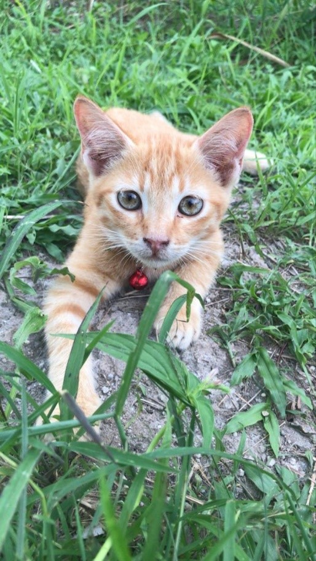
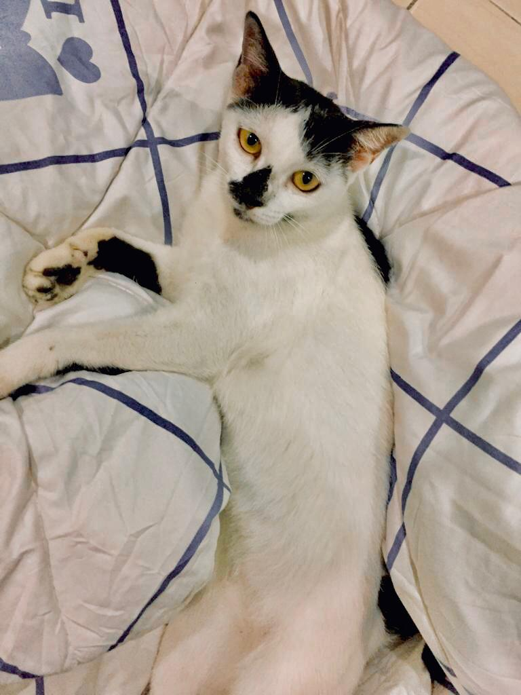
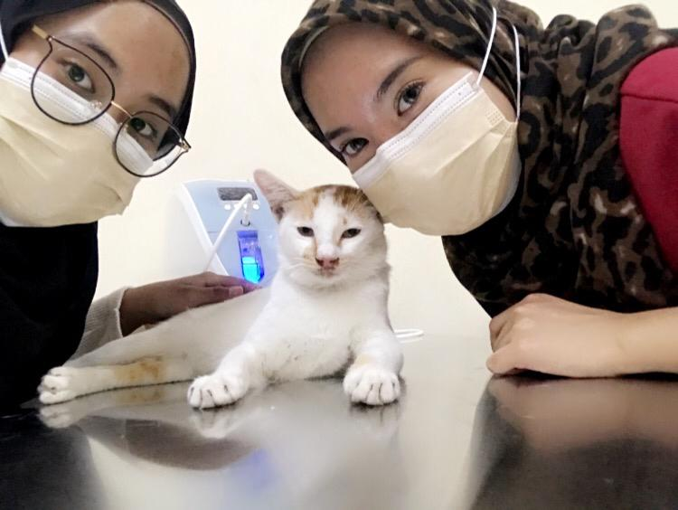

💗💗💗💗💗💗💗💗💗💗💗💗💗💗💗💗

  
I really love all my cat! This is a picture of them and there are actually many more cats that I keep. They were so cute and spoiled with me as well as with my family. At first, I only defended a few cats but, as they got older, they started to give birth to a few more cats. I will buy them nutritious and quality food because I always want the best for my cat. Every 3 month, I would take them to get vaccinated to make sure they didn't get any dangerous infections. At night, I would make sure that all my cats went home not to because I was afraid if I let them out of the house, they would disappear and be eaten by other animals like dogs because once upon a time, my cats were eaten by dogs and I took a lesson to always be careful by making sure they were always safe under my family’s control. My cats also have their own house that my dad built in the backyard. I can’t imagine my life without my cats because for me, they are a part of my life.
💗